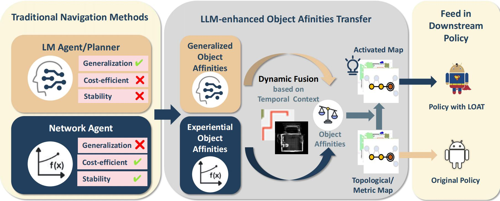
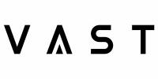

|
Dingxi Zhang Hi!! I'm Dingxi (Kristen) Zhang, a Master's student in Computer Science at ETH Zurich. My research focuses on 3D vision, computer graphics, and generative models. Currently, I am working on research projects in Computer Vision and Geometry Group led by Prof. Marc Pollefeys. Previously, I completed my undergraduate studies at the University of Chinese Academy of Sciences, where I worked with Prof. Lin Gao and Prof. Shiguang Shan at the Institute of Computing Technology, Chinese Academy of Sciences. In my spare time, I love playing basketball, skiing, strumming the guitar, and constructing some Lego creations. Email / CV / Github / Google Scholar / Linkedln |

|
ResearchMy research interests are 3D vision, graphics and machine learning. Specifically, my current focus centers on developing efficient neural representations and devising user-friendly and effective methods for interacting with 3D objects and scenes. |

|
StylizedGS: Controllable Stylization for 3D Gaussian Splatting
Dingxi Zhang, Yu-Jie Yuan, Zhuoxun Chen, Fang-Lue Zhang, Zhenliang He, Shiguang Shan, Lin Gao* TPAMI, 2025 paper / project / code A 3D neural style transfer framework with adaptable control over perceptual factors based on 3D Gaussian Splatting representation. |

|
GigaHands: A Massive Annotated Dataset of Bimanual Hand Activities
Rao Fu*, Dingxi Zhang*, Alex Jiang, Wanjia Fu, Austin Funk, Daniel Ritchie, Srinath Sridhar CVPR, 2025 (Highlight) paper / project / code A massive annotated dataset capturing 34 hours of bimanual hand activities, totaling 14k motion clips derived from 183 million frames paired with 84k text annotations. |
|

|
Advancing Object Goal Navigation Through LLM-enhanced Object Affinities
Transfer
Mengying Lin, Shugao Liu, Dingxi Zhang, Yaran Chen*, Haoran Liu, Dongbin Zhao, IROS, 2025 paper A novel approach in robot navigation combines LLMs with traditional methods. |
|
|
StrokeFaceNeRF: Stroke-based Facial Appearance Editing in Neural Radiance
Field
Xiao-Juan Li, Dingxi Zhang, Shu-Yu Chen, Feng-Lin Liu, CVPR, 2024 paper A novel stroke-based method for editing facial NeRF appearance. Our method outperforms existing 2D and 3D methods in both editing reality and geometry retention. |

|
Towards Efficient 3D Local Conditioning
Dingxi Zhang, Artem Lukoianov SIGGRAPH Asia, 2023 paper / code Using an weight-encoded Neural Network to approximate a grid of latent codes, while sharing the decoder across the entire category to achieve better reconstruction quality while using less memory per sample to store single geometry. |
Experience |
|
|
Huawei, Switerland
Research Intern Advisor: Dr. Fan Li Jul 2025 - Present |
|

|
VAST, Beijing
Research Intern Advisor: Dr. Yanpei Cao Mar 2024 - Feb 2025 |
|
|
Brown University, Providence, RI
Visiting Student Host: Interactive 3D Vison & Learning Lab Advisor: Prof. Srinath Sridhar and Prof. Daniel Ritchie Jun 2023 - Nov 2025 |

|
MIT, Cambridge, MA
Exchange Student, GPA: 5.0/5.0 UROP Intern at Scene Representation Group & Geometric Data Processing Group, MIT CSAIL UROP Intern at Personal Robot Group, MIT Media Lab Feb 2023 - Jun 2023 |

|
University of Chinese Academy of Sciences, Beijing
Bachelor of Compute Science, GPA: 3.96/4.0 Sep 2020 - Jun 2024 Outstanding Graduate Student Outstanding Thesis Awards 2023 National Scholarship 2022 SenseTime Scholarship Merit Student of Bejing |
Other Interesting ProjectsBesides research, I also enjoy coding various projects to explore how computer science can enhance our daily lives, as well as foster engaging interactions with diverse subjects. |

|
Interactive Computer Vision Cervical Spine Preventing System
Dingxi Zhang, Mengying Lin, Zhuoxun Chen, Hang Wang, Boling Zhai, Tianyu Zheng paper / code An efficient and complete system for cervical spine prevention on common PC device, it can detect cervical posture in real-time, provide timely feedback to remind users to pose correctly and an interactive game to guide the user to exercise their cervical spine scientifically. |

|
NOX: Neo-quOrum sensing-based Xpression biosensor platform
UCAS-iGEM Team. My Role: Advisor Award: 2023 International Genetically Engineered Machine Competition, Gold Award; Top 10 Undergrad; Best New Composite Part; website / code / demo A highly compatible and robust platform with impressive performance to construct an artificially organized signaling pathway based on synthetic biology. We designed a NLP-based search tool Powered by Llama2 and BERT for iGEM standard parts, Ask NOX. |
|
|
FitYo: A Customized Meal Replacements Generator
UCAS-iGEM Team. My Role: Vice Team Captain; Software Group Leader Award: 2022 International Genetically Engineered Machine Competition, Bronze Award website / code A system capable of producing nutritious, delicious, and highly user-free meal replacement foods by lactic acid bacteria modified by synthetic biology technology. We design a portable IoT machine to make meal replacement, an application for our machine & an entertaining science game and a convenient tool for creating wiki. |
|
|
Decaffi: Personalized Caffeine Intake Management Scheme Based on Synthetic
Biology
UCAS-iGEM Team. My Role: Key Software Engineer Award: 2021 International Genetically Engineered Machine Competition, Silver Award website / code A comprehensive caffeine intake management system and provide users with scientific and proper caffeine intake recommendations. We design an application Caffeine-monitor to achieve this and an online education platform iGEM EduHub for better Synthetic Biology education. |
|
Website Template: Jon Barron's website. |